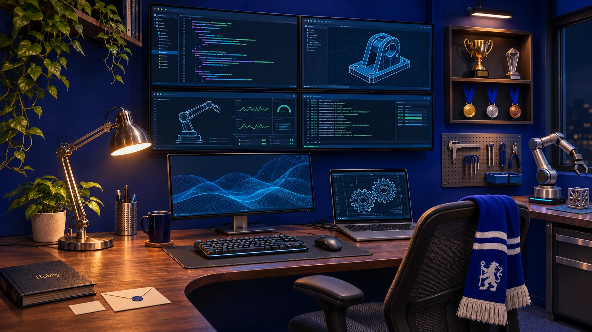

蓝墙 VHS 档案室
Chelsea 蓝工程办公室里融入 CRT、磁带与手写记录。十项实体保持齐全，复古媒介形成主叙事。
- 视觉
- 暖光与蓝墙形成对比；需避免照搬参考站细节
- 交互
- 实体入口清晰；卡册、纸张和档案袋各自独立
- 难度 / 性能
- 中高 / 中高；重点控制微小贴纸和近景细节
- 扩展
- 适合经历与收藏；长论文通过独立面板阅读
THREE DIRECTIONS · EARLY CONCEPTS
三种视觉语言共享同一套强制房间元素与内容模块。点击方向切换概念稿，再点击物件查看带有 [待提供] 占位文字的内容。当前页是平面视觉研究稿，不是 3D 场景或建模审批件。

DECISION FRAMEWORK
所有方向都必须保留十项强制实体和独立内容模块。眼前概念稿不替代完整空间图、真实 3D 灰盒或 CEO 审批。
Chelsea 蓝工程办公室里融入 CRT、磁带与手写记录。十项实体保持齐全，复古媒介形成主叙事。
以 Klein Blue 和白色为主，工作站、机械臂与展示柜构成真实工程空间；实体档案承担个人故事。
保留 Chelsea 蓝实体工程办公室，用轨道、节点和数据图层增加原创的知识网络感。